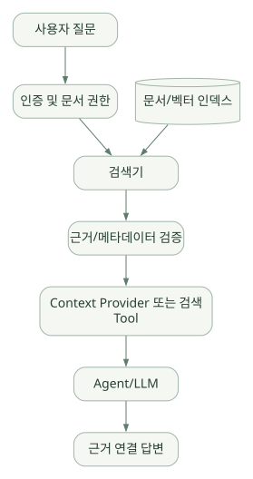

핵심 원리 / 단원 04
저장된 정보가 모델 입력이 되는 과정
대화 이력·Provider·컨텍스트 압축과 근거 검색
먼저 연결해 보기
Session에 저장된 대화, 장기 기억 저장소, 현재 모델 요청의 Context는 같은 범위가 아닙니다. 저장된 정보도 현재 입력에 선택해 넣어야 모델이 참고할 수 있습니다.
History와 Context Provider의 역할을 먼저 이해하고 압축·RAG를 연결합니다. 검색 시점의 권한과 문서 버전, 압축 시 Tool 호출과 결과의 연결을 보존하는 조건이 핵심입니다.
읽는 관점무엇을 저장하고, 언제 읽고, 어떤 근거를 현재 요청에 넣는지 추적하세요.
10. Session, History, State, Memory의 차이#
10.1 가장 중요한 비교표#
| 개념 | 보관 대상 | 유지 단위 | 설명 |
|---|---|---|---|
| Session | 실행 연속성·conversation ID·상태 | 사용자/대화 | 동일 대화 이어가기 |
| History | 과거 메시지·Tool 요청/결과 | 턴 또는 세션 | 모델 입력 재구성 |
| Context Provider | 매번 주입할 추가 정보 | 실행 전/후 | RAG, 사용자 선호, 단기/장기 메모리 |
| Long-term Memory | 추출한 지속 정보 | 여러 세션 | 어떤 정보를 기억할지 설계 필요 |
| Workflow State | Executor별 상태·다음 메시지 | 하나의 Workflow 실행 | 흐름 제어에 필요 |
| Checkpoint | 시점별 Workflow 상태 스냅샷 | Superstep 등 | 실패 후 재개 |
단순히 Session을 만들었다고 장기 메모리 검색 엔진이 자동 제공되는 것은 아니다. [D07][D10]
10.2 Session 사용 예제#
session = agent.create_session()
a = await agent.run("이번 대화에서 DRAM 공정 관련 항목만 살펴보자.", session=session)
b = await agent.run("앞에서 정한 범위로 3가지 가설을 정리해줘.", session=session)
# 외부 저장은 애플리케이션 책임
serialized = session.to_dict()
# app_db.save(user_id, serialized)
# 복원 예시
from agent_framework import AgentSession
restored = AgentSession.from_dict(serialized)서비스 측 conversation ID가 저장될 수도 있다. 복원 전 인증 사용자가 해당 세션 소유자라는 점을 서버에서 검증해야 한다. [D07]
10.3 History Provider#
InMemoryHistoryProvider는 테스트와 간단한 데모에 유용하다. 로컬 이력 저장과 원격 서비스가 관리하는 대화 이력은 수명·권한·직렬화 형태가 다르다. FileHistoryProvider 등 추가 옵션이 있지만 실험적 기능 여부와 지속성·동시성 한계를 확인해야 한다. [S06]
10.4 Context Provider#
Context Provider는 실행 직전에 원격 검색 결과·메모리·추가 지침 등을 제공하고 실행 이후 저장 작업을 수행할 수 있다. Tool은 모델이 요청해 호출하는 함수이고, Context Provider는 모델 호출 전후에 런타임이 준비하는 문맥/상태 기능이라는 차이가 있다. [D06][D11]
반도체 사례: 담당 라인에 대한 접근 권한과 사용자 질의의 장비 범위를 확인한 뒤, 허용 범위의 기준 문서나 공정 이력만 컨텍스트에 주입한다.
11. Context Compaction과 RAG#
11.1 메모리와 Context가 다른 이유#
LLM의 Context Window는 한 번의 모델 요청에서 참고할 수 있는 입력 용량이다. 외부 DB에 오래 저장된 정보라 해도 현재 모델 요청에 전달하지 않으면 모델이 직접 알 수 없다. 반대로 최근 메시지를 길게 전달한다고 해서 장기 메모리가 구축된 것은 아니다.
| 기법 | 해결하는 문제 | 운영상 유의점 |
|---|---|---|
| 원본 History 그대로 전달 | 대화 연속성 | 토큰과 지연 증가 |
| Window / Truncation | 한도를 넘지 않기 | 앞서 나온 중요한 정보 유실 |
| Summarization/Compaction | 짧게 유지하면서 정보 보존 | 요약 오류와 출처 누락 |
| RAG Retrieval | 외부 문서에서 필요한 부분 선택 | 권한, 검색 품질, 근거 버전 |
| File Memory | 명시적인 지속 정보 기록 | 저장 범위와 보존 정책 |
11.2 Compaction 동작의 개념#
현재 messages + tool traces
↓
(설정한 정책) 컨텍스트 예산 초과 감지
↓
대화 일부 요약/압축 또는 선택적 제거
↓
필수 지침·활성 Tool 맥락·후속 상태 보존
↓
다음 모델 요청에 새 Context 공급중요: Tool 호출 내용과 그 결과는 서로 참조하는 논리적 묶음이다. 도구 호출만 남고 결과가 제거되는 식으로 압축하면 모델이 잘못된 맥락을 가질 수 있다. 고정 버전 소스의 개발 가이드에서도 함수 호출/결과 및 reasoning 연관 정보를 함께 보존하는 규칙을 강조한다. [S09]
python-1.24.0 릴리스에는 AgentTriggeredCompactionStrategy, UnloadSkillsCompactionStrategy라는 실험적 기능이 추가되었다. 이름만 보고 Harness에서 자동으로 항상 켜진다고 가정하지 않는다. 사용 여부와 옵션, 실험적 API 변경 가능성을 별도로 확인한다. [R01]
11.3 RAG의 위치#
RAG(Retrieval-Augmented Generation)는 일반적으로 다음 흐름으로 구성한다.
넓은 도식은 가로로 이동하며 읽을 수 있습니다. 도식 크게 보기 ↗

원문에 수록된 학습용 도식입니다. 노드·화살표·분기 라벨을 보존해 다시 배치했습니다. 세부 조건과 예시·구현의 구분은 앞뒤 본문을 함께 읽으세요.
도식 원문 보기 (Mermaid)
flowchart LR
Q[사용자 질문] --> ACL[인증 및 문서 권한]
ACL --> R[검색기]
IDX[(문서/벡터 인덱스)] --> R
R --> C[근거/메타데이터 검증]
C --> P[Context Provider 또는 검색 Tool]
P --> LLM[Agent/LLM]
LLM --> A[근거 연결 답변]- 선조회 방식: 질문마다 Context Provider가 검색하여 모델 요청에 자동으로 근거를 넣음.
- 에이전트 선택 방식: Agent에 검색 Tool을 제공하여 필요할 때 모델이 호출.
- 혼합 방식: 짧은 기본 정책/용어는 Provider가 넣고 큰 문서 탐색은 Tool로 수행.
반도체 지식 Agent에서는 doc_id, revision, effective_date, equipment_group, access_scope 같은 근거 메타데이터가 중요하다. 임베딩을 사용한다는 이유만으로 정확한 문서를 찾았다고 믿으면 안 된다.